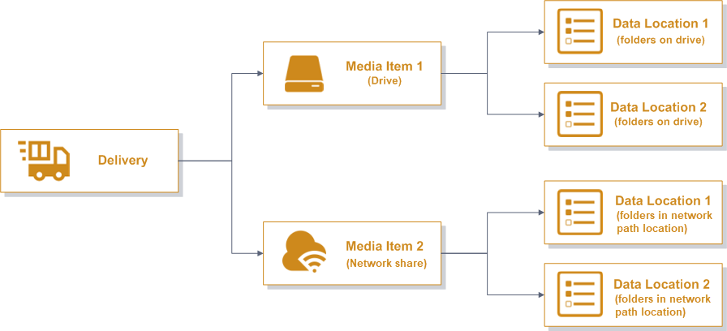
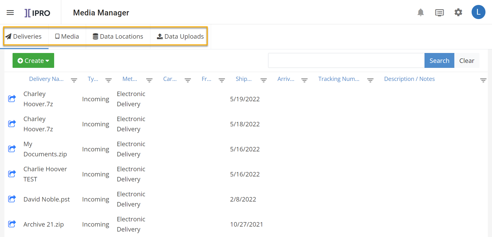
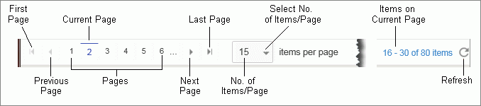
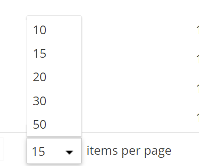
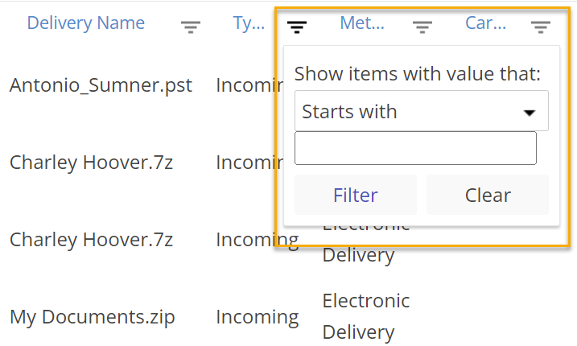
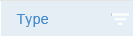
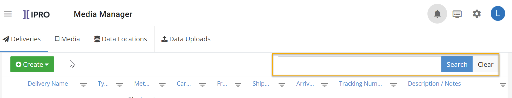

Understand the Media Manager Interface
Deliveries, Media, and Data Locations are objects
with a hierarchical relationship in Media Manager. Each has their own tab on the Media Manager dashboard.
The relationship between Deliveries, Media, and Data
Locations is shown in the diagram below:

Tabs
The Media Manager interface includes the following tabs:
-
Deliveries:
Deliveries are anything you send or receive. Deliveries
of all types contain media.
-
Media:
Media stores data that gets copied to a network share from an FTP
site. Examples of media include a physical drive, DVD, or
an FTP transmission.
-
Data Locations: Data locations refer to where the data you are processing is actually located, such as a network share location, an external drive, a folder on an external drive etc.
-
Data Uploads: The Data Uploads tab shows the history and status of data uploaded via Self-Service.

Navigation Bar
Use the navigation bar at the bottom of the page to
change the number of rows displaying per page (10, 15, 20, 30, or 50)
and to navigate to different pages and to refresh the page. See the following
figure for details.

Grids
Grids are found throughout Media Manager. Expand the options below to learn more about the actions you can take while working with grids.
View Grids
Each tab in Media Manager includes a grid of tab-specific
items (such as deliveries) and related details in table format. By default,
most grids display the details for 15 items (rows) per page, but you can adjust the number of items displayed in the navigation bar.

Sort Grids
Most grids (such as the Deliveries
grid) can be sorted by clicking a column heading. A sorted column is indicated by an  or
icon.
or
icon.
Sorting is in effect across pages while you work in
a tab. If you change to a different tab, the sorting returns to the default
sort for that tab.
To change the sort order, click the column heading
again. Clicking an unsorted column one time sorts the column in ascending
order; clicking again sorts the column in descending order; clicking a
third time clears the sort. You can also refresh the
page to clear the sort.
Filter Grids
Every column includes a Filter button to the right
of the column label. To filter a grid:
-
In Media Manager, click the
tab of interest (Deliveries,
Media, or Data
Locations).
-
Click
for the column to be filtered.
-
Click
and
select a needed criterion, Starts
with, Is equal to, or
Is not equal to.

-
Enter
your filter criterion. Note that filter entries
are not case sensitive.
-
For Starts
with, enter the minimum starting characters that will ensure
the desired results. For example, in Deliveries
tab, only two types of delivery exist (incoming and outgoing).
To display only outgoing deliveries, enter “o” in the Filter box.
-
For
Is equal to or Is not equal to, enter
the complete filter term.
-
For date columns
(such as the Shipped
column on the Deliveries
tab), enter the complete date of interest, for example, “10/6/2015.”
|

|
Note: You
can also click the Calendar button
, and select
the needed date. Or, enter the date in an alternative common date
format (such as Oct. 6, 2015).
|
-
Click
Filter and review results
on all pages. If a column is filtered, its heading is highlighted in blue,
as follows:

-
Optional: Filter additional columns. For example,
after filtering to display only incoming deliveries, you might want to
filter the From column to
show deliveries from a specific sender.
-
To clear a filter, click ,
then Clear.
Find Grid Content
To find an entry on only the current page, use your
browser’s Find function (usually Ctrl + f).
To search for details in the current grid (Delivery,
Media, or Data
Locations), use the Media Manager Search function as follows. The
following figure shows the Media Manager Search.

-
In Media
Manager, click the tab of interest (Deliveries,
Media, or Data
Locations).
-
In the Search field, enter any part (or all)
of the search term/phrase of interest. Media Manager searches are not
case sensitive. (For example, the same results will occur whether you
search for data, DATA,
or Data.)
-
Click Search.
All items containing the search term in any column will display. For example,
if a Delivery Name for some
items includes “DataSet” and the From
name for other items is “Data Services,” if you search for “data,” both
Delivery and From
names will be listed.
-
View search results on all pages. Optionally,
filter and/or sort the search results.
-
To return to the full grid, click Clear.
Related Topics
Overview: Media Manager
Add New Incoming Delivery
Add New Outgoing Delivery
Media Manager FAQs